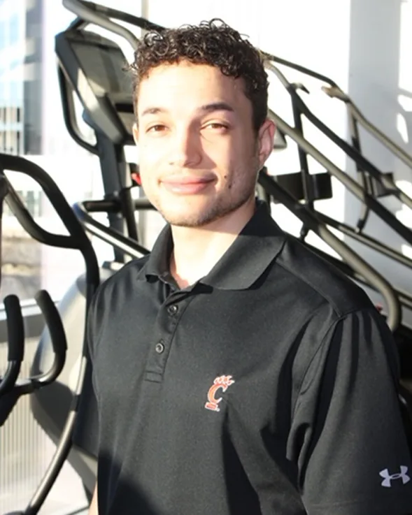

AndrewDunbuss
Master’s in Nutrition Sciences. Conditioning for D1 programs at NC State and Cincinnati.
How long have you been in fitness and can you describe your journey?
The gym is like a second home to me, I have been in gyms 3-5 days a week be it for my career or personal use, if not both, for going on 10 years. I am a health professional with specialized knowledge in the fields of Nutrition and Analytics who has a great appreciation for physical and mental health. I have worked in D1 athletics programs (NC State and University of Cincinnati), corporate health (Most recently IBM), and PT settings (both general and sports rehab).
What made you want to get into fitness coaching?
Originally seeking to do biomedical engineering, I am a problem solver, but have found that my skills/passions draw me towards a career where I can use my expertise to analyze and incentivize people’s decisions to improve their overall efficiency, health, etc. … ultimately to maximize their ability to reach their goals and impact society. Simply put, I like to help people reach their full potential!
What is a success or highlight in your fitness career that you’re particularly proud of?
I am proud to be in a field where I love what I do. I am grateful for having been given the opportunity to help every individual I have come into contact with over the last 7 years of my professional journey. It is awesome when I get to explain exercise and nutrition concepts to individuals who are interested in learning them so that they can improve their health and habits moving forward. I get it though some people just like to work hard and spare the details! I have been a part of the conditioning of 2 teams who have reached the final four in D1 basketball and have been given the opportunity to work with many elite athletes and sport teams in my field.
What are some things that you like to do in your spare time?
I enjoy watching competition at almost any level. Basketball and golf are my favorite pastimes. I enjoy reading and learning from individuals who are masters of their craft and knowledgeable in their field, in addition to different characters throughout history from which we can learn important context and life lessons from. I have also swam a mile in 34 minutes and biked over 20 miles in the past.
If you had one piece of advice for a client who is transitioning to a new trainer and possibly deviating from their comfort levels, what would it be?
With any serious endeavor in life it is imperative to have goals, bring them with you to your first session. A credible trainer will use their knowledge along with your goals to develop a personalized program for you and ensure your physical needs are being met. One thing I have learned over the years is that providing health services is about meeting people where they are already at and helping them to grow and develop from there, not stuffing your latest program or usual methods down their throat. We are all creatures of habit. It is important for us to lean into being uncomfortable and develop new skills.
What are some of your special skill sets and things that your clients should know about you?
I have a master’s degree in Nutrition Sciences. I am a functional training specialist. Not sure about what functional training is? Ask me more in person! I am working on learning to do controlled flips on solid ground and jump higher. I taught myself how to juggle one summer. I want to learn how to speak another language and play the saxophone.
Bayli King →